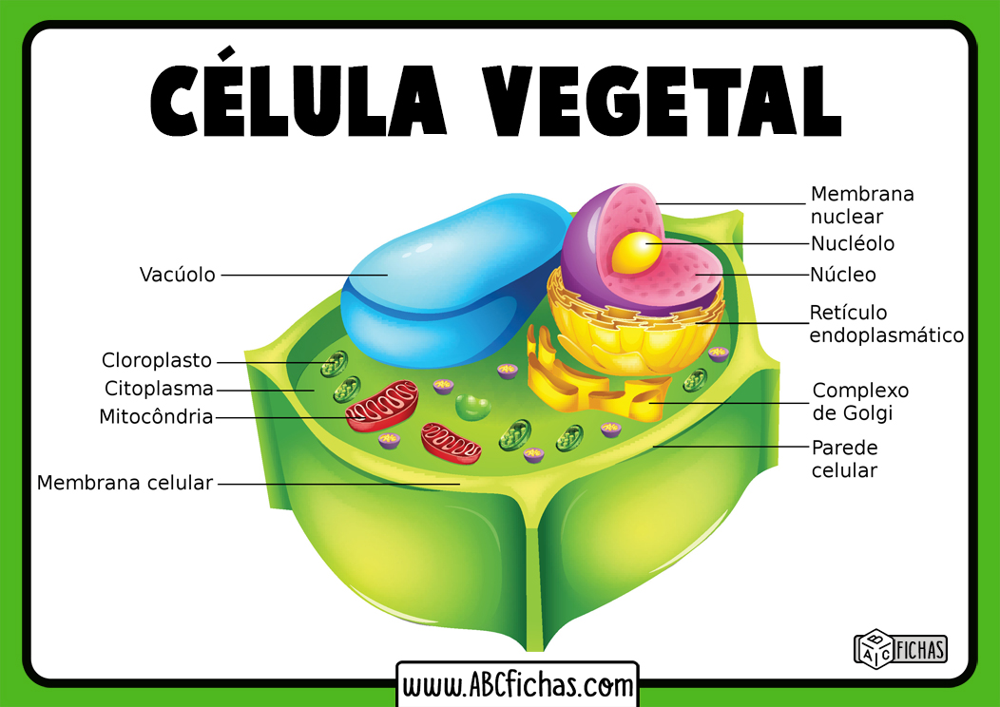

CÉLULA VEGETAL

Qué es la célula vegetal
La célula vegetal es aquella que compone a los miembros del reino Plantae. Es una célula eucariota, con un núcleo diferenciado, membrana y citoplasma al igual que la célula animal. Ambos tipos de células comparten algunas características pero difieren en otras. Específicamente, la célula vegetal cuenta con partes únicas, ya que realiza un proceso exclusivo del reino Plantae: la fotosíntesis.
Las células vegetales se diferencian de otros tipos de células eucariotas por ciertas características distintivas como son principalmente:
- Contienen una vacuola central de gran tamaño.
- Tienen una pared celular hecha principalmente de celulosa
- La célula vegetal es la encargada de la fotosíntesis,
- Contiene plasmodesmos, poros en la pared celular que permiten la comunicación con células adyacentes.
- Cuentan entre sus organelos con los plástidos, da el color verde a las plantas.
Tipos de células vegetales
- Células del parénquima.
- Células del colénquima.
- Células del esclerénquima.
Tipos de tejidos vegetales
- Células de xilema: especializadas en conducción de agua.
- Floema: dedicadas al transporte de alimento.
- Células epidérmicas: células especializadas que cubren las hojas, los tallos, las flores y todas las partes de la planta.
Partes de la célula vegetal y sus funciones
- Núcleo: es el centro de control de la célula y contiene la información genética en forma de ADN (Ácido desoxirribonucleico).
- Membrana nuclear: la membrana o envoltura nuclear.
- Membrana plasmática o celular: es también una capa externa pero en este caso envuelve a toda la célula.
- El Citoesqueleto: es una importante estructura que le da soporte y forma a la célula y mantiene a los orgánulos en su lugar.
- Pared celular: es una capa o estructura rígida compuesta principalmente de celulosa y cuya función es proteger a la membrana plasmática y dar rigidez y forma a la célula. Adicionalmente, cuenta con unos conductos llamados plasmodesmos que permiten la comunicación con otras células. Tiene tres partes fundamentales: pared primaria, pared secundaria y laminilla media.
- Citoplasma: es la materia dentro de la membrana plasmática exceptuando al núcleo y que contiene, al citosol y a los orgánulos de la célula.